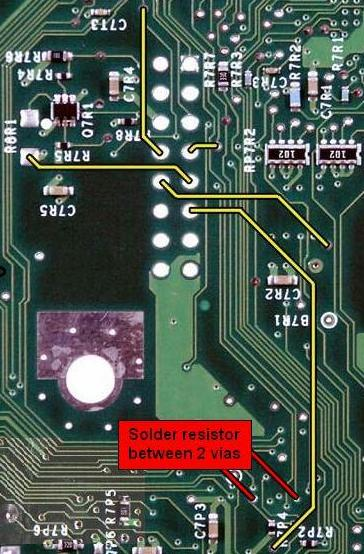
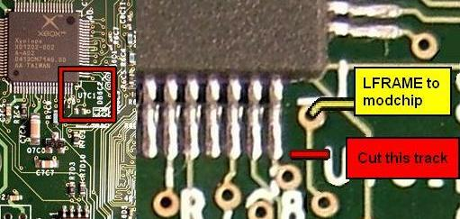

Extending the life expectancy of a
modchipped v1.6 xbox
As with all
information obtained on the net, please read, and do some research and
verify the validity of information you read. I do research, and
put together a summary of what I found. Make your own
desicisions, and do not consider once sole source as the guide to
modding.
In a v1.6
xbox, one of the data signals on the motherboard (LFRAME) is short
circuited to ground to let a modchip boot. This puts a strain on the
xbox electronics (power supply) whenever the modchip is operating.
Although the modchips work, the life expectancy of the xbox may be
shortened by doing this - much like driving your car around with the
engine always running at 6000rpm (the car still goes, but the engine
will get warn out much more quickly). A resistor can be used to prevent
the problem of installing a modchip, and extend the life of the xbox.
However, if you install a chip with the "Always On" mode, like the
Aladdin method, you don't need to install any resistor. Just cut the
trace, no soldering of wires are needed for
the LFRAME. Also, cheapmod installs are not effected by
this since the LFRAME trace is cut and connected to a switch instead of
grounding it.
The bios on a v1.6 xbox is loaded from the LPC bus, which is the same
bus that modchips use. So, there will be two different biosez trying to
load at the same time onto the same
wires. The v1.0-1.5 xboxs used separate wires to load the MS bios
compared
to the modchip and so this wasn’t a problem.
Now, On the v1.6 we are shorting a different signal, called LFRAME,
which as far as the xbox is concerned, is required to load the bios,
period. This causes a problem because the signal does not turn off when
the modchip loads; like the v1.0-1.5 xboxs do. So you now have
continuous current flowing whenever the modchip is being used - a
current which is coming from a data line driver which is not designed
to be held high all th time like that.
Do, the fix for this is quite simple, cut the data trace on the
motherboard, and insert a resistor. With the modchip off, the resistor
has very little effect on the data line, so the xbox will boot
normally. With the modchip on, the resistor acts as a current limiter
to less than 5mA (less than one-tenth of the original value) and so
prevents any long term damage occuring to the xbox.
RESISTOR INSTALL

You install a 680 ohm resistor that bridges those two solder
pads. A surface mount (#1206) fits perfectly, but you can use
a regular resistor (0.25watt to even 0.5watt).with jumper wires,
or cut the leads to fit.
CUT TRACE
If you plan on never loading the original bios again?

LFRAME was originally used to signal the start and end of a data
transfer on
the LPC bus in the v1.3-1.5 xbox, M$ removed this signal from
the motherboard in V1.6+, to circumvent "cheapmod" modchips, so they no
longer
work. So, modchip makers then generated this missing signal
with some added electronics on the modchip. On v1.6 xboxs, you
short the LFRAME signal on the motherboard so that the bios on the
motherboard doesn't know that it is being sent data (so it can't see
the start signal) and so it doesn't do anything. The newer modchips now
generate the missing signal themselves, so they see the data correctly
and can load up without any problem.
With the trace CUT, and no resistor installed, you have to put a switch
in so that you can load the original bios with the modchip off.
There is a lot of information about this process, and from what I read,
cuting the trace there will prevent the M$ bios from loading with the
mod chip off.
REMEMBER, the designed mod chip for the V1.6 will work, but supposedly
puts a load on the system, with LFRAME being held at a high state all
the time. LFRAME is a switched signal, and wasn't
meant to be left on.